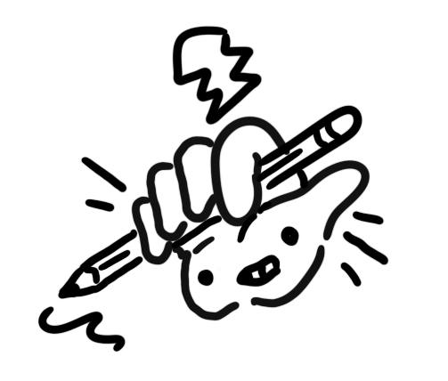

Smartsource
Establishing and transforming the Smartsource brand to tackle challenges faced by small businesses during Covid.

Based in North Wales, working with companies worldwide to turn user frustration into business growth.

Creating design languages and component libraries that scale with your team.
From initial concepts to testable prototypes that get stakeholder buy-in.
Conducting user testing and turning data into actionable opportunities for improvement.
Creating content with language that actually speaks to your users.
Developing new components, implementing improvements, and fixing bugs.
Focusing on best practice, accessibility, and actionable steps to reduce your websites carbon footprint.
Establishing and transforming the Smartsource brand to tackle challenges faced by small businesses during Covid.
Assessment metrics for the Ralph Lauren website were conducted using expert review, satisfaction and performance assessments.

Conducting research to help Tails.com offer more services to it's existing user base.

A comprehensive and meticulous redesign to change the perception of the worlds first privacy focused search engines.